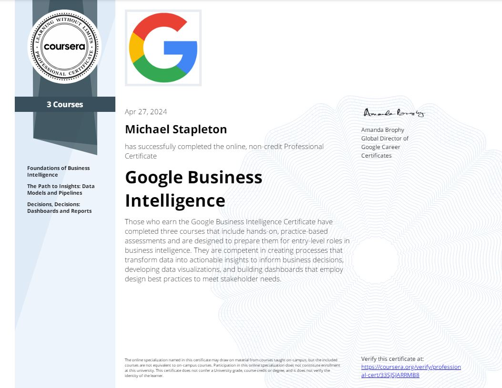

Google Business Intelligence Capstone
Tools Used: SQL (BigQuery, Dataflow) and Tableau
Scenario: As part of my Google Business Intelligence Specialization I completed a capstone project; applying the technical and soft skills I learned during coursework to address a mock scenario. My project was to assist the Google Fiber customer call center team on a business intelligence project, to gain insight into customer satisfaction and trends in repeat callers.
Specifically, my role was to create a dashboard to help the customer call center team identify trends in customer activity and monitor project outcomes in the long term.
Action: I consulted with stakeholders to review the business scenario and develop project planning documents, then created an ETL pipeline to support a reporting table. Finally, I developed a dashboard based on project requirements.
Technical Walkthrough
1. After completing Google's “Foundations of Business Intelligence” course, I reviewed project outlines and stakeholder communications to produce three project planning documents. These documents detailed all project requirements, the metrics and charts needed to meet those requirements, and an initial mockup of the dashboard.
2. Having solidified those project planning documents, I then needed to get my hands on the data and finalize a reporting table. I created an ETL pipeline using SQL(Big Query) to vet and merge multiple datasets into one target table. This was achieved through a pretty simple SQL script below:
3. SELECT*
4. FROM`google_fiber_MJBS.market_1`
5. UNION ALL
6. SELECT*
7. FROM`google_fiber_MJBS.market_2`
8. UNION ALL
9. SELECT*
10. FROM`google_fiber_MJBS.market_3`
3. Having merged my data into one target table, I finally needed to create the dashboard itself. I connected my target table to Tableau, created the charts based on stakeholder requirements, then compiled everything in one dashboard view.
One of the project requirements was to promote user accessibility by incorporating features such as text-to-speech. I incorporated these accessibility elements and finalized my dashboard.
Reflection
As this was a mock scenario, there weren't any real business outcomes associated with this project. That being said, this was a valuable capstone project to complete. I was able to apply the foundational techniques I learned during my course work and complete and entire project from end to end. Through this all I gained experience with new skills, such as data modelling, and gained a holistic view of all that goes in to a successful BI project.